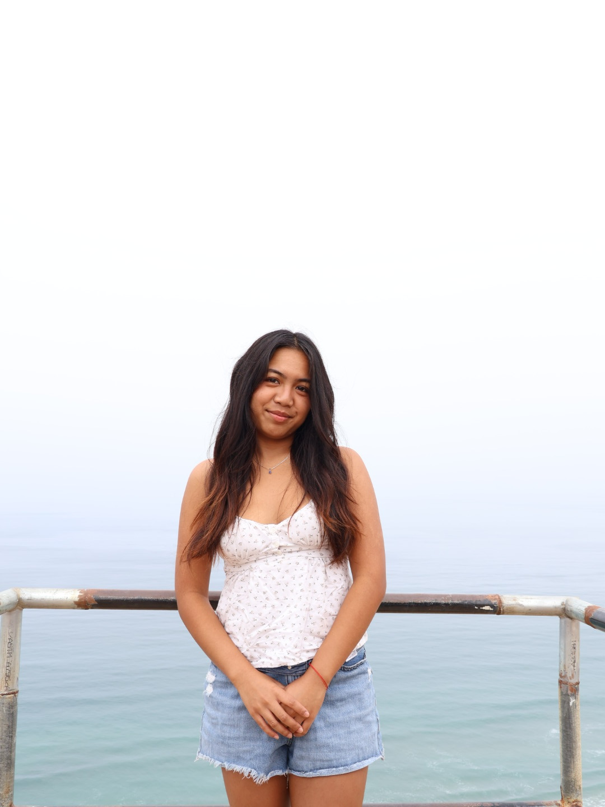

Data Science • Neuroscience • Design

Hi, I’m Jamera. I’m a student at UC San Diego studying Data Science, with interests in machine learning, neuroscience, and building meaningful technology that connects analysis with real-world impact.
I enjoy working across both technical and creative spaces, whether that means developing data-driven projects, exploring research, or designing experiences that feel thoughtful and personal.
Outside of academics, I also love art and design, which continues to shape how I think about problem-solving, storytelling, and the way I present my work.